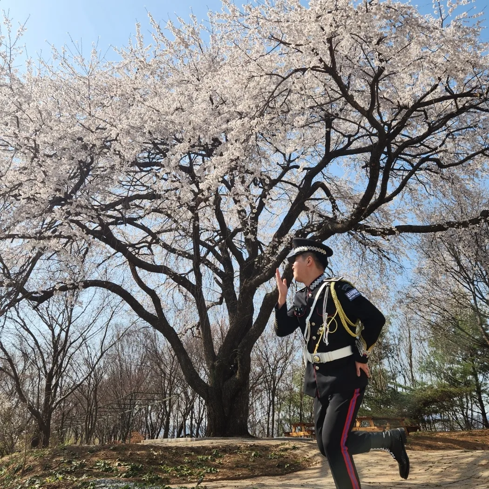
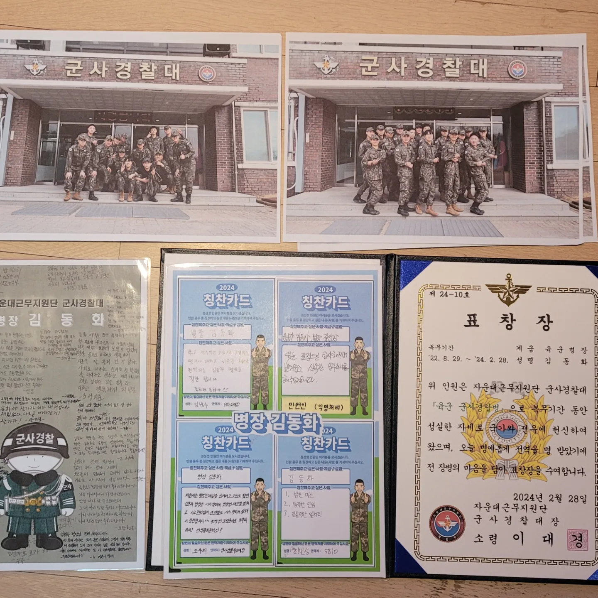

Home
About Me
Career
김동화의 생애
2003년 02월 13일: 김동화 출생
2009년: 전주 문학초등학교 입학
2015년: 전주 기전중학교 입학
2018년: 전주 영생고등학교 입학
2021년: 전북대학교 스마트팜학과 입학
2022년 8월: 스마트팜학과 2학년 1학기 마친 후 군입대

2024년 2월: 전역

2024년 9월: 스마트팜학과 2학년 2학기 복학
현재: 복학 후 알바, 운동, 공부하며 열심히 사는 중
현재시간
첫 화면으로 가기